虚拟机和容器：从全系统模拟到云原生编排
课程：2026 春季学期《操作系统原理》
讲师：蒋炎岩（jyy）
官方课程主页：https://jyywiki.cn/OS/2026/
官方讲义：https://jyywiki.cn/OS/2026/lect29.md
视频来源：Bilibili BV1uaEB66EAH
版权说明：课程讲义与幻灯片归蒋炎岩所有，采用 Creative Commons BY-NC 4.0 许可；本电子书是对课堂讲授的书面化重构，保留出处与许可说明。
导语：一台机器如何变成许多台
(参考时间: 00:00)
虚拟化的目标可以概括为一句话：
让一个进程或操作系统以为自己独占了一台机器。
课程从最朴素的全系统模拟出发，逐步走到现代容器：
flowchart LR
A["Full System Emulation"] --> B["JIT / 动态翻译"]
B --> C["VMM 直接执行"]
C --> D["硬件虚拟化"]
D --> E["操作系统级虚拟化"]
E --> F["Namespaces"]
E --> G["cgroups"]
F --> H["容器"]
G --> H
H --> I["Kubernetes 编排"]
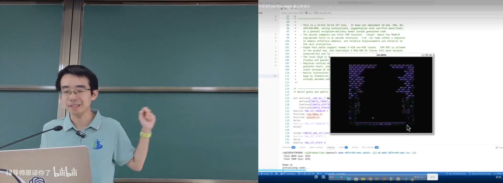
📷 从全系统模拟一路走到容器与 Kubernetes
回到原视频 (00:01:00)
1. 全系统模拟：概念简单，性能困难
1.1 NEMU 式模拟器
(参考时间: 00:00)
全系统模拟器需要：
- 取指令；
- 译码；
- 执行；
- 更新 CPU 状态；
- 处理特权指令和设备。
概念模型并不复杂，但逐条解释指令的性能通常不到原生执行的 1/10。
flowchart TD
A["Fetch"] --> B["Decode"]
B --> C["Execute"]
C --> D["Update CPU State"]
D --> E{"Next?"}
E -- "继续" --> A
E -- "异常 / 中断" --> F["Handle Trap"]
📷 逐条解释执行可以获得正确性但性能很低
回到原视频 (00:01:00)
1.2 Basic Block
(参考时间: 00:02)
如果连续取出的指令不改变控制流，它们可以组成一个 basic block：
mov eax, 1
mov ebx, 2
add eax, ebx
直到遇到：
- 条件跳转；
- 间接跳转；
return；- 异常或系统调用。
flowchart LR
A["Instruction 1"] --> B["Instruction 2"]
B --> C["Instruction 3"]
C --> D["Branch / Return"]
D --> E["Basic Block Ends"]
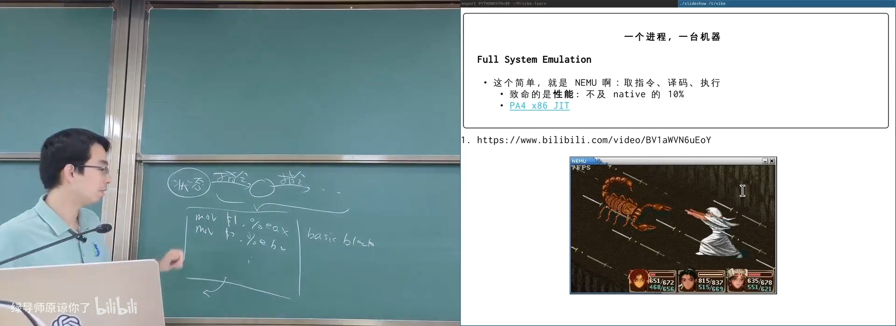
📷 基本块是连续、无控制流分叉的指令序列
回到原视频 (00:02:30)
1.3 JIT：把基本块变成本机代码
(参考时间: 00:03)
最直接的方法：
- 把基本块转写成 C 函数；
- 调用本机 C 编译器；
- 生成
.so； dlopen加载；- 解析 relocation；
- 跳转执行。
概念代码：
void basic_block(CPUState *cpu) {
cpu->eax = 1;
cpu->ebx = 2;
}
编译器可以把立即数直接编码进机器指令，避免运行时再次译码。
flowchart TD
A["Guest Basic Block"] --> B["Generate C"]
B --> C["Native Compiler"]
C --> D[".so / Native Code"]
D --> E["dlopen + Relocate"]
E --> F["Jump and Execute"]
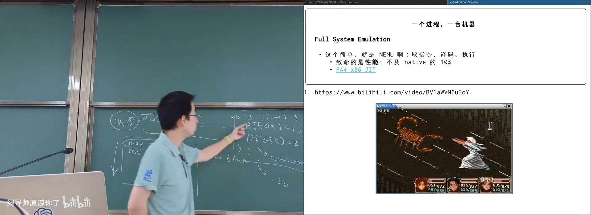
📷 把基本块编译成本机代码可以显著提高模拟性能
回到原视频 (00:04:30)
1.4 只编译热点
(参考时间: 00:06)
每个基本块都调用一次外部编译器不可接受：
- 编译器启动成本约几十到几百毫秒；
- 只执行一次的基本块编译收益为负。
实际 JIT 通常使用分层策略：
解释执行
↓ 统计执行次数
热点超过阈值
↓ 后台编译
缓存本机代码
↓ 下次直接跳转
Java VM、Node.js VM 等也使用类似机制。
flowchart TD
A["Interpret Basic Block"] --> B["Increment Hot Counter"]
B --> C{"Hot Enough?"}
C -- "否" --> A
C -- "是" --> D["Compile in Background"]
D --> E["Cache Native Code"]
E --> F["Future Direct Jump"]
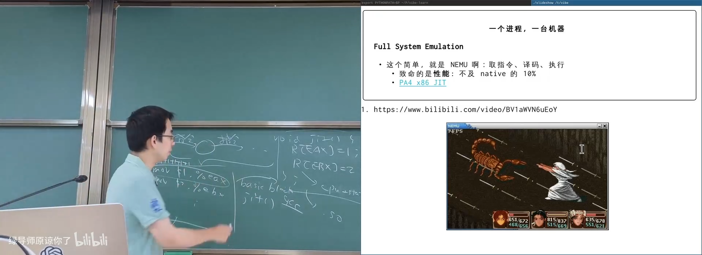
📷 JIT 只编译反复执行的热点基本块
回到原视频 (00:06:30)
2. QEMU dyngen：模板拼接与重定位
2.1 不调用外部编译器
(参考时间: 00:08)
QEMU 早期方案希望同时满足：
- 跨主机架构；
- 无需每个 basic block 调外部编译器；
- 比纯解释执行快。
核心想法：
预先编译“单条 Guest 指令的代码模板”，运行时把模板拷贝并修补。
flowchart LR
A["Guest Instruction Template"] --> B["Native Instruction Blocks"]
B --> C["memcpy into Basic Block"]
C --> D["Patch Immediate / Relocation"]
D --> E["Execute"]
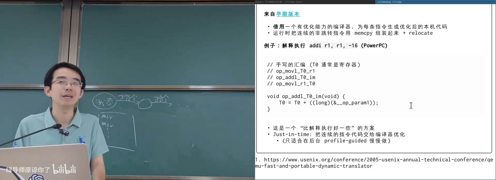
📷 动态生成器复用预编译模板，不调用外部编译器
回到原视频 (00:09:00)
2.2 单条 Guest 指令拆成三条本机操作
(参考时间: 00:10)
以 addi r1, r1, -16 为例：
// T0 is a temporary host register.
void op_addl_T0_im(void) {
T0 = T0 + ((long)(&__op_param1));
}
对应步骤：
1. mov T0, guest_r1
2. add T0, immediate
3. mov guest_r1, T0
flowchart LR
A["Guest R1"] --> B["Move to Host T0"]
C["Immediate"] --> D["Add to T0"]
B --> D
D --> E["Move T0 to Guest R1"]
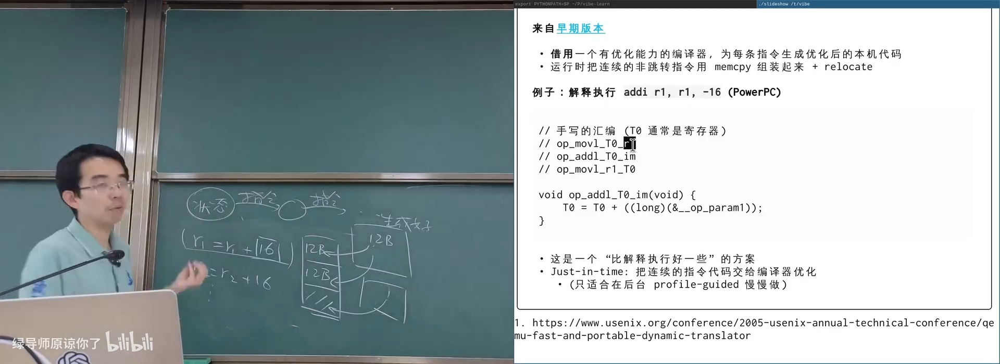
📷 ADD immediate 被拆成三条可复用本机模板
回到原视频 (00:11:00)
2.3 Placeholder 与 relocation
(参考时间: 00:12)
模板先编译成一段本机机器码，并把未知立即数留作 placeholder：
mov T0, guest_r1
add T0, 0x00000000 ; patch location
mov guest_r1, T0
运行时：
- 复制模板；
- 找到 relocation 位置；
- 写入真实立即数；
- 执行拼接后的 basic block。
flowchart TD
A["Template"] --> B["memcpy"]
B --> C["Find Relocation Slot"]
C --> D["Patch Immediate"]
D --> E["Host Basic Block"]
E --> F["Native Execution"]
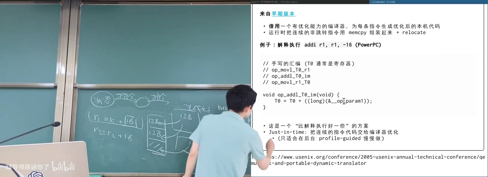
📷 模板拼接后只需少量字节修补即可执行
回到原视频 (00:13:30)
3. Disco、VMware 与虚拟化的黄金时代
3.1 1970 年代的想法重新复活
(参考时间: 00:16)
Disco（SOSP '97）重新提出 Virtual Machine Monitor：
- 一台物理机运行多个完整操作系统；
- 每个 Guest OS 看到独立的虚拟硬件；
- 通过直接执行和受控陷入获得接近原生的性能。
flowchart TD
HW["Physical Hardware"] --> VMM["Disco VMM"]
VMM --> G1["Guest OS 1"]
VMM --> G2["Guest OS 2"]
VMM --> G3["Guest OS N"]
G1 --> A1["Applications"]
G2 --> A2["Database / NFS"]
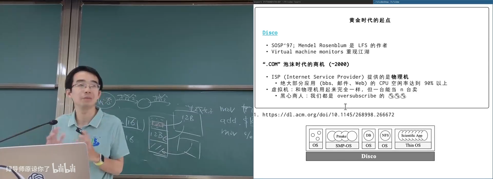
📷 Disco 在同一物理机上运行多个完整 Guest OS
回到原视频 (00:17:30)
3.2 Dot-com、ISP 与超卖
(参考时间: 00:19)
2000 年前后：
- 应用常由 ISP 租用物理服务器；
- BBS、邮件、网页服务 CPU 空闲率经常超过 80% 到 90%；
- 虚拟机可以承诺“与物理机使用体验相同”；
- 一台物理机切分后卖给多个用户；
- 云厂商会进一步
oversubscribe。
flowchart LR
PHYS["One Physical Server"] --> V1["VM 1: BBS"]
PHYS --> V2["VM 2: Mail"]
PHYS --> V3["VM 3: Web"]
V1 --> IDLE["Mostly Idle"]
V2 --> IDLE
V3 --> IDLE
IDLE --> SELL["Oversubscribe to More Tenants"]
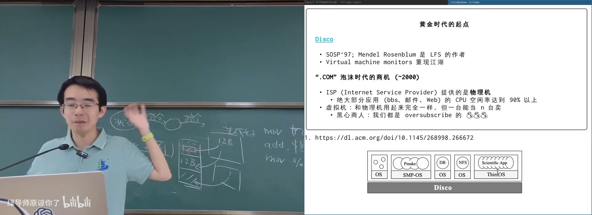
📷 低利用率服务器通过虚拟机超卖获得更多收入
回到原视频 (00:21:30)
3.3 VMware
(参考时间: 00:24)
Mendel Rosenblum 与团队的 Disco 技术最终催生 VMware：
- 虚拟机和物理机使用方式一致；
- Guest OS 无需修改；
- VM 成为数据中心基础设施；
- 后续影响 CPU 硬件虚拟化。
flowchart LR
A["Disco Paper"] --> B["VMware VMM"]
B --> C["Enterprise Virtualization"]
C --> D["Cloud Infrastructure"]
D --> E["Hardware Virtualization"]
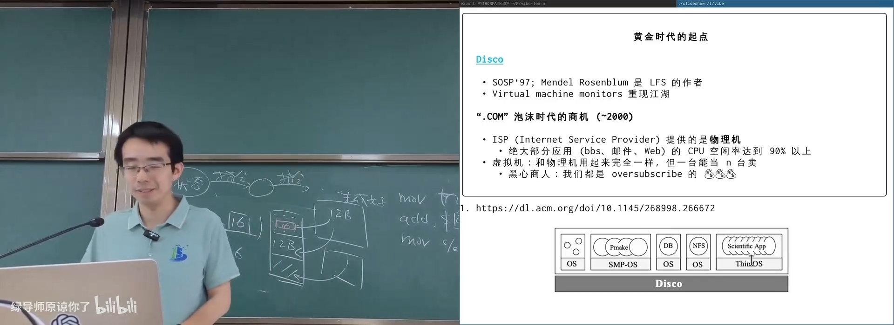
📷 Disco 研究技术最终形成 VMware 商业生态
回到原视频 (00:24:30)
3.4 大学、论文与品味
(参考时间: 00:28)
讲师在这里插入一段关于科研的评论：
- 论文不是给项目凑数；
- 不应隐藏不利数据或选择性报告；
- Benchmark crime 会污染后续研究；
- 好的工作往往“复活一个过去无法实现的想法”。
Disco 的价值不只是实现了虚拟化，还重新点燃了 1970 年代虚拟机监控器的路线。
flowchart TD
A["Real Problem"] --> B["Good Taste"]
B --> C["New Mechanism"]
C --> D["Reproducible Evaluation"]
D --> E["Long-Term Research"]
F["Paper Factory"] --> G["Benchmark Crime"]
G --> H["Polluted Literature"]
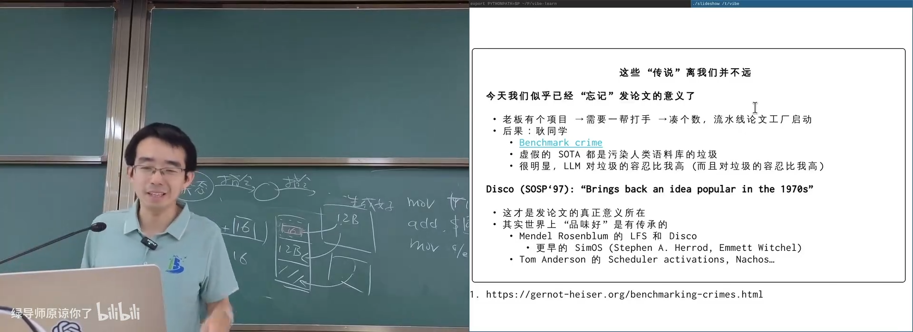
📷 科研需要品味、诚实评测和长期影响
回到原视频 (00:29:00)
3.5 Y Combinator 与“元机制”
(参考时间: 00:26)
课程提到 Paul Graham 创办 Y Combinator，并用 Y 组合子作为名字：
def Y(f):
def wrapper(*args):
return f(wrapper)(*args)
return wrapper
factorial = Y(lambda f: lambda n: 1 if n < 2 else n * f(n - 1))
讲师把它类比为“能够不断生成方法的元机制”：
- 技术浪潮会变化；
- 选择正确问题的方法仍会重复出现；
- 会学习、会迁移，比死记结论更重要。
flowchart LR
A["Y Combinator"] --> B["Recursive Mechanism"]
B --> C["Produce More Methods"]
C --> D["Adapt to New Problems"]
D --> E["Meta-Mechanism"]
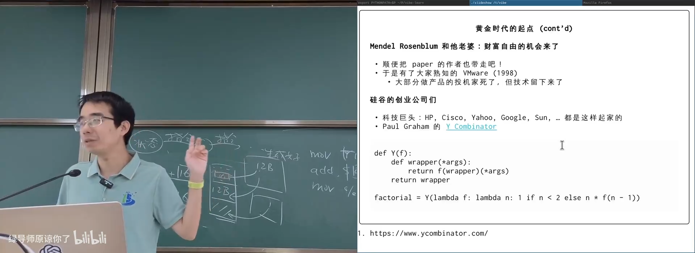
📷 Y 组合子被用作“生成方法的元机制”比喻
回到原视频 (00:26:30)
3.6 从分数到更大的世界
(参考时间: 00:38)
讲师回应“最后两个实验考试会考吗”，指出分数通常很重要，但不应成为唯一动力：
- 评价标准变化后仍要能选择问题；
- 环境和见闻会影响品味；
- 好的技术工作可以改变世界；
- 不要只做 reward hacking。
flowchart TD
A["Score-Driven Learning"] --> B{"Score Still Matters?"}
B -- "是" --> A
B -- "否" --> C["No Internal Direction"]
D["Problem-Driven Learning"] --> E["Technical Taste"]
E --> F["Can Choose New Problems"]
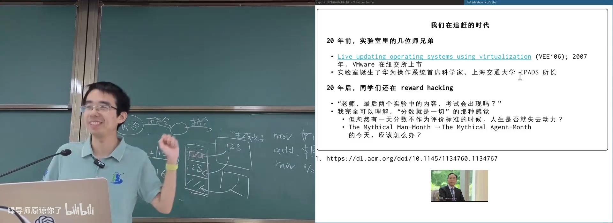
📷 只追求分数会在评价标准变化后失去方向
回到原视频 (00:38:00)
4. VMM 直接执行与影子页表
4.1 用户代码可以直接执行
(参考时间: 00:40)
同架构下，Guest 用户态代码与 Host 用户态代码可以使用同一套指令：
- Guest Ring 3 代码在 Host Ring 3 执行；
- 普通计算无需模拟；
- 系统调用等特权边界需要拦截。
flowchart TD
A["Guest User Code"] --> B["Host Ring 3"]
B --> C{"Privileged Operation?"}
C -- "否" --> D["Execute Natively"]
C -- "是" --> E["Trap to VMM"]
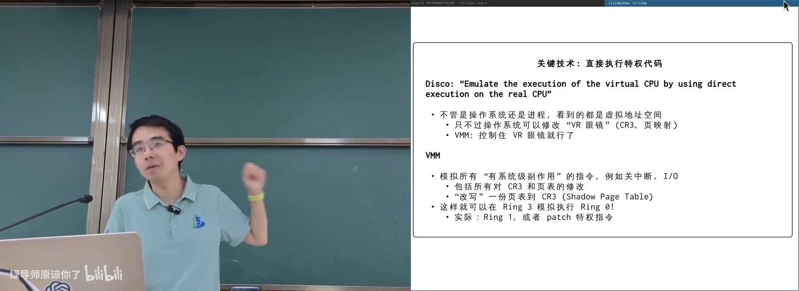
📷 普通 Guest 用户态代码可以直接在 Host 上执行
回到原视频 (00:41:00)
4.2 页表就是 VR 眼镜
(参考时间: 00:42)
页表把虚拟页映射到物理页，并附带权限：
Virtual Page 1 -> Physical Page 1
Virtual Page 2 -> Physical Page 3
Virtual Page 3 -> Physical Page 8
Guest OS 认为自己拥有物理内存，并可以修改 CR3、页表项和其他控制寄存器。
flowchart LR
VPN1["VPN 1"] --> PFN1["Guest PFN 1"]
VPN2["VPN 2"] --> PFN3["Guest PFN 3"]
VPN3["VPN 3"] --> PFN8["Guest PFN 8"]
CR3["CR3"] --> ROOT["Page Table Root"]
ROOT --> VPN1
ROOT --> VPN2
ROOT --> VPN3
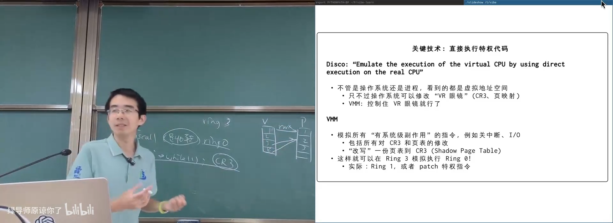
📷 Guest OS 通过 CR3 和页表控制自己的虚拟地址空间
回到原视频 (00:43:30)
4.3 Ring 1、指令扫描与 Trap
(参考时间: 00:45)
VMware 式方案把 Guest Kernel 放在较低权限，使特权操作陷入 VMM。若硬件权限级不够，还可以：
- 扫描 Guest Kernel；
- 对危险指令打补丁；
- 用 breakpoint 式机制替换成 trap；
- 在 trap 中模拟或修正行为。
只有少数特权操作需要陷入，绝大多数内核代码仍以本机速度执行。
flowchart TD
A["Guest Kernel"] --> B["Ring 1 / Patched Privilege Instructions"]
B --> C{"Dangerous Instruction?"}
C -- "否" --> D["Execute Natively"]
C -- "是" --> E["Trap into VMM"]
E --> F["Emulate / Fix State"]
F --> D
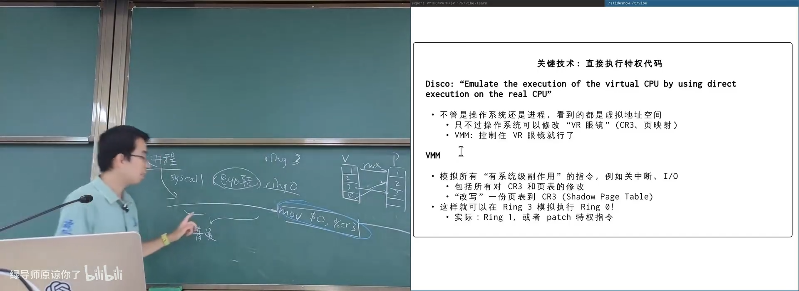
📷 只有系统级副作用指令需要陷入 VMM
回到原视频 (00:46:30)
4.4 Shadow Page Table
(参考时间: 00:47)
Guest 的“物理地址”仍然是 Host 的虚拟地址，因此 VMM 必须维护影子页表：
Guest VPN 1 -> Guest PFN 1 -> Host PFN 4
Guest VPN 2 -> Guest PFN 3 -> Host PFN 8
Guest VPN 3 -> Guest PFN 8 -> Host PFN 12
Guest 修改自己的页表时，VMM 拦截并更新影子页表；Guest 切 CR3 时，VMM 装入对应的影子页表。
flowchart TD
G["Guest Page Table"] --> S["Shadow Page Table"]
S --> H["Host Physical Memory"]
CR3["Guest writes CR3"] --> T["Trap to VMM"]
T --> U["Select Shadow Root"]
U --> S
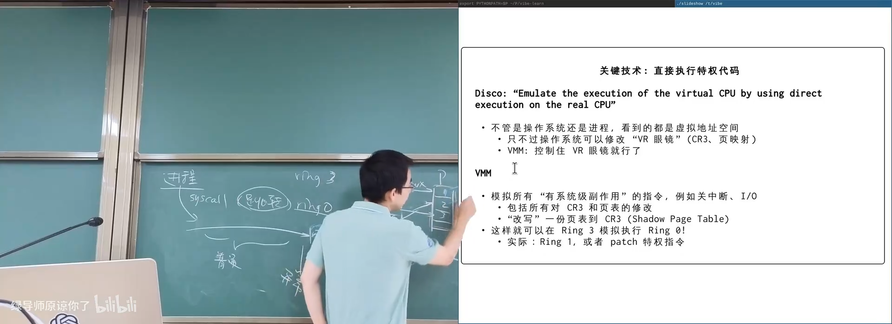
📷 影子页表把 Guest 物理地址再次映射到真实物理内存
回到原视频 (00:48:30)
4.5 硬件虚拟化
(参考时间: 00:49)
硬件逐渐加入支持：
- Intel VT-x（2005）；
- VT-d（2006）；
- EPT（2008）；
- Xen paravirtualization；
- VIRTIO 虚拟 I/O。
CPU 可以原生执行部分特权操作，只在必要事件上产生 VM Exit；二级页表由硬件完成。
flowchart LR
A["Software VMM"] --> B["VT-x"]
B --> C["VT-d / IOMMU"]
C --> D["EPT / Nested Paging"]
D --> E["VIRTIO"]
E --> F["Fast Hardware Virtualization"]
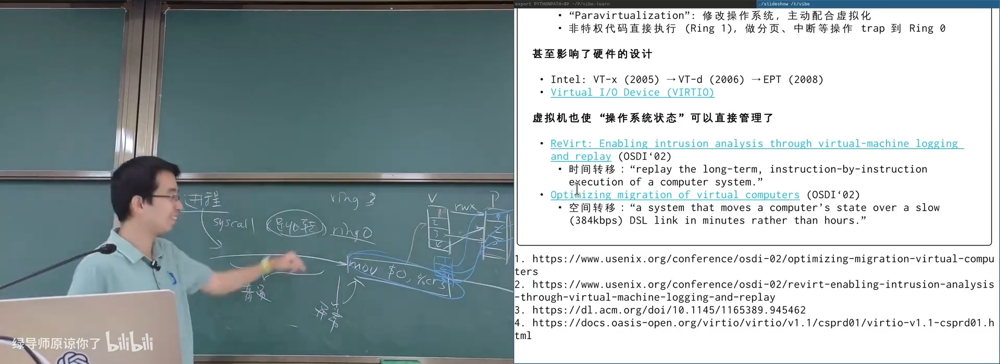
📷 硬件虚拟化把影子页表和特权陷入逐步下沉到 CPU
回到原视频 (00:50:30)
4.5 ReVirt：记录并重放整台机器
(参考时间: 00:52)
ReVirt 记录虚拟机执行中的非确定性外部输入：
- 中断；
- 设备输入；
- 时间；
- 网络数据。
记录这些事件后，可以逐指令重放整个系统。
flowchart TD
A["VM Execution"] --> B["Record External Inputs"]
B --> C["Replay Log"]
C --> D["Instruction-by-Instruction Replay"]
D --> E["Intrusion / Bug Analysis"]
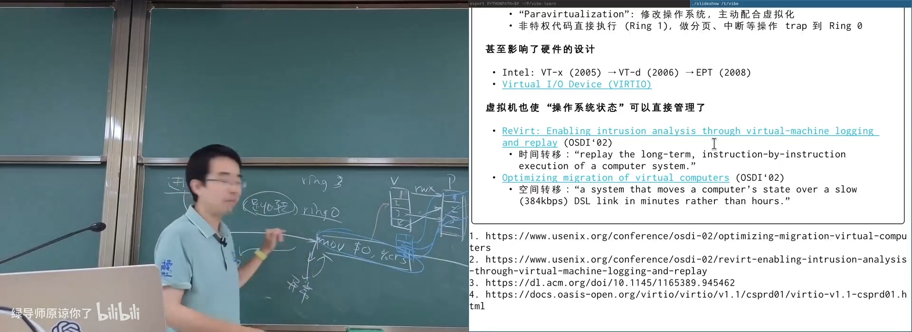
📷 记录外部输入即可重放虚拟机长期执行历史
回到原视频 (00:52:30)
4.6 空间迁移
(参考时间: 00:53)
虚拟机状态可以看作一块内存：
- 暂停 VM；
- 断开或重定向设备；
- 把内存和状态迁移到另一台机器；
- 在新机器恢复执行。
这就是 Live Migration 的基础。
flowchart LR
A["Source Host VM"] --> B["Pause / Snapshot"]
B --> C["Transfer Memory + State"]
C --> D["Destination Host VM"]
D --> E["Resume"]
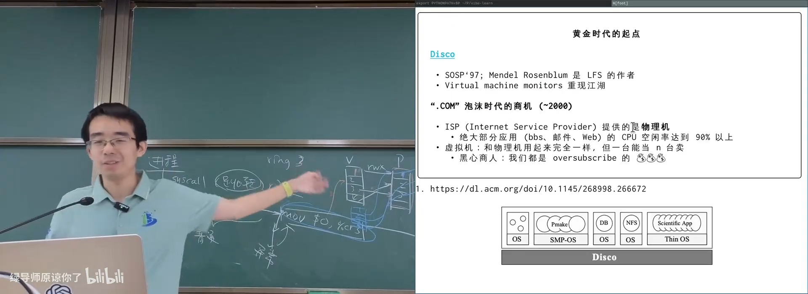
📷 虚拟机状态迁移让计算可以在机器之间移动
回到原视频 (00:53:30)
5. 换一条路线：操作系统自己虚拟化自己
5.1 OSID：为每个对象增加命名空间编号
(参考时间: 00:54)
虚拟机把整台机器虚拟化；操作系统级虚拟化则直接让多个“小操作系统”共享一个内核。
概念模型：
struct proc {
int pid;
int osid;
// ...
};
所有对象都属于某个 OSID：
- 进程；
- 用户；
- 文件系统视图；
- IPC；
- 网络；
- 时间与主机名。
flowchart TD
K["One Kernel"] --> O1["OSID 1"]
K --> O2["OSID 2"]
O1 --> P11["PID 1"]
O1 --> P12["PID 2"]
O2 --> P21["PID 1"]
O2 --> P22["PID 2"]
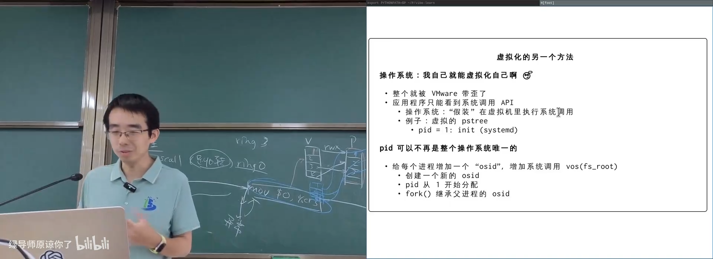
📷 OSID 让不同命名空间拥有独立的 PID 空间
回到原视频 (00:54:30)
5.2 PID 隔离示例
(参考时间: 00:56)
每个 OSID 都可以有自己的 PID 1：
- 从一个 OSID 出发，只能看到同 OSID 的进程；
kill、wait、proc遍历都受到 OSID 过滤；- 新进程继承父进程 OSID；
- 全局可以重新编号 PID，也可以为每个命名空间单独分配。
flowchart TD
A["Process with OSID 1"] --> B["List / Kill"]
B --> C{"Target OSID == 1?"}
C -- "是" --> D["Visible / Accessible"]
C -- "否" --> E["Not Found"]
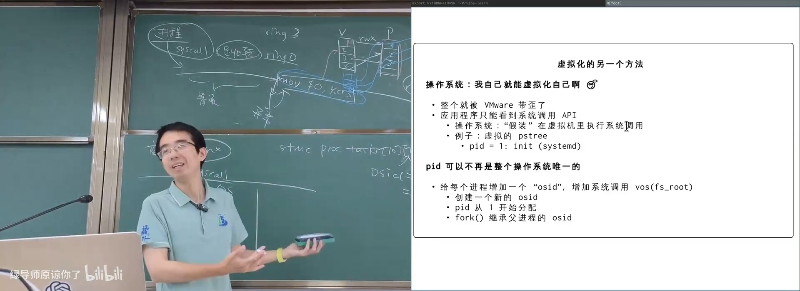
📷 OSID 过滤使不同隔离域看不到彼此进程
回到原视频 (00:56:30)
5.3 PID 是 leaky abstraction
(参考时间: 00:58)
PID 会被回收，经典 TOCTTOU：
ps | grep SomeProcess
sleep ...
kill <pid>
如果原进程退出且 PID 被复用，kill 可能杀掉另一个进程。
sequenceDiagram
participant User
participant Kernel
User->>Kernel: ps, read PID 31181
Kernel-->>User: PID 31181
Kernel->>Kernel: process exits
Kernel->>Kernel: PID reused
User->>Kernel: kill 31181
Kernel-->>User: kills wrong process
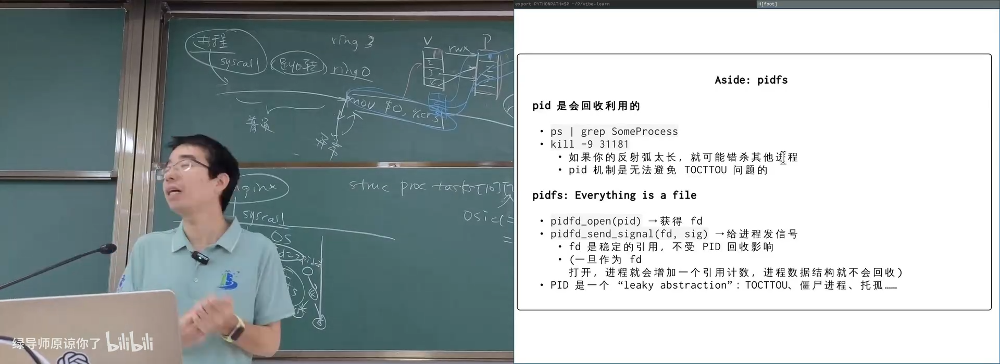
📷 PID 回收产生 TOCTTOU 风险
回到原视频 (00:58:30)
5.4 pidfd
(参考时间: 01:00)
Linux 增加：
int fd = pidfd_open(pid, 0);
pidfd_send_signal(fd, SIGTERM, NULL, 0);
pidfd 是稳定引用，持有期间进程结构不会被回收，因此不会误杀复用 PID。
flowchart LR
A["PID"] --> B["pidfd_open()"]
B --> C["Stable FD Reference"]
C --> D["pidfd_send_signal()"]
D --> E["Correct Process"]
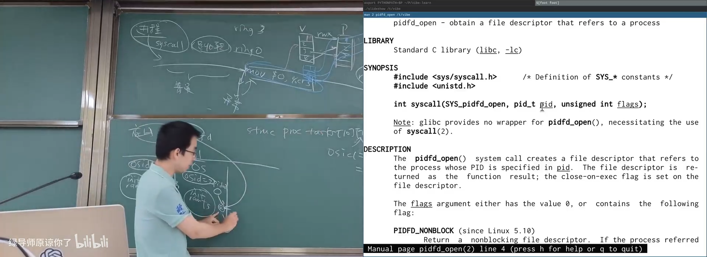
📷 pidfd 用文件描述符消除 PID 复用歧义
回到原视频 (01:00:30)
6. chroot：最早的文件命名空间隔离
(参考时间: 01:01)
Version 7 Unix 已提供：
chroot("/path/to/new/root");
进程看到的 / 变成指定目录：
Host /srv/container
bin/
lib/
home/
Process sees:
/bin
/lib
/home
flowchart TD
A["Host Filesystem"] --> B["/srv/container"]
B --> C["New Root"]
C --> D["/bin"]
C --> E["/lib"]
C --> F["/home"]
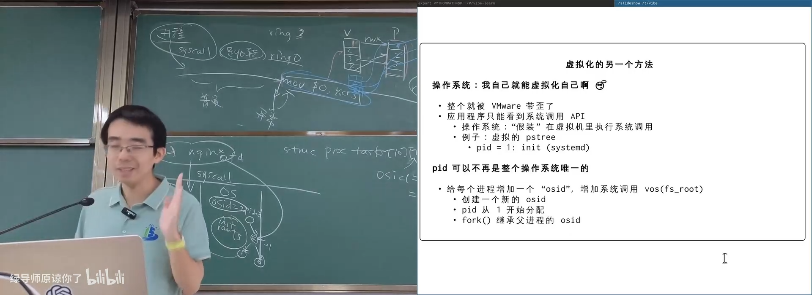
📷 chroot 把进程文件系统视图限制在子目录内
回到原视频 (01:01:30)
6.1 chroot 的限制
(参考时间: 01:03)
chroot 只隔离文件系统视图：
- PID 未隔离；
- 用户未隔离；
- 网络未隔离；
- IPC 未隔离；
- 逃逸手段很多。
尝试 chroot 到一个不完整的目录时，连 shell 所需的 /bin/sh 都不存在。
flowchart TD
A["chroot only"] --> B["Filesystem View"]
A --> C["Shared PID"]
A --> D["Shared Users"]
A --> E["Shared Network"]
A --> F["Shared IPC"]
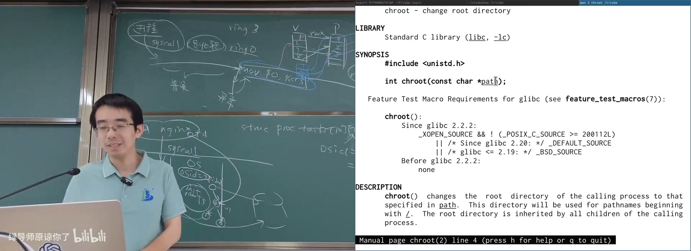
📷 chroot 只隔离文件系统命名空间
回到原视频 (01:03:30)
7. Linux Namespaces
7.1 需要隔离哪些对象
(参考时间: 01:04)
从操作系统对象出发，可以枚举命名空间：
- pid：进程 ID；
- user：用户和组；
- mnt：挂载点与文件系统；
- ipc：信号量、消息队列、共享内存；
- net：网络设备、协议栈、端口；
- time：系统时间和时区；
- uts：主机名和域名；
- cgroup：cgroup 视图。
flowchart TD
A["Namespace Types"] --> B["pid"]
A --> C["user"]
A --> D["mnt"]
A --> E["ipc"]
A --> F["net"]
A --> G["time"]
A --> H["uts"]
A --> I["cgroup"]
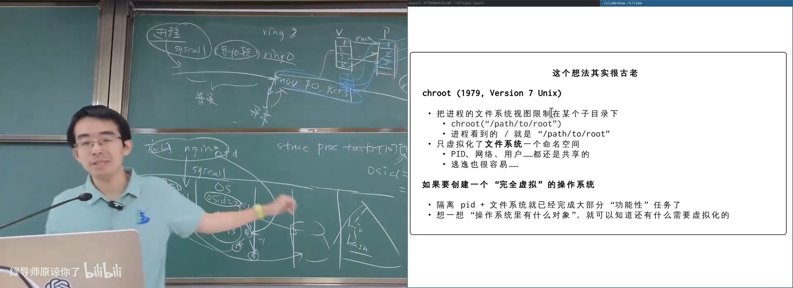
📷 命名空间覆盖操作系统中的主要共享对象
回到原视频 (01:04:30)
7.2 创建和切换命名空间
(参考时间: 01:05)
常用 API：
clone(..., CLONE_NEWPID | CLONE_NEWNS | CLONE_NEWNET, ...);
unshare(CLONE_NEWPID | CLONE_NEWNET);
setns(fd, CLONE_NEWNET);
flowchart LR
A["clone(CLONE_NEWXXX)"] --> B["New Namespace at Process Creation"]
C["unshare(CLONE_NEWXXX)"] --> D["Move Current Process"]
E["setns(fd, CLONE_NEWXXX)"] --> F["Join Existing Namespace"]
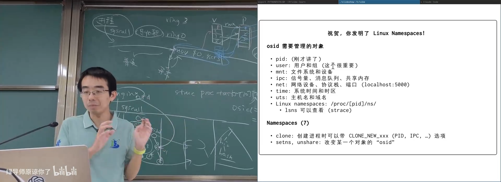
📷 clone、unshare、setns 创建或切换命名空间
回到原视频 (01:05:30)
7.3 /proc/[pid]/ns/
(参考时间: 01:06)
每个进程都有命名空间引用：
/proc/<pid>/ns/
pid
user
mnt
ipc
net
uts
time
cgroup
lsns 可以列出系统中的命名空间。
flowchart TD
A["/proc/pid/ns"] --> B["pid"]
A --> C["mnt"]
A --> D["net"]
A --> E["user"]
A --> F["ipc"]
A --> G["uts"]
A --> H["time"]
A --> I["cgroup"]
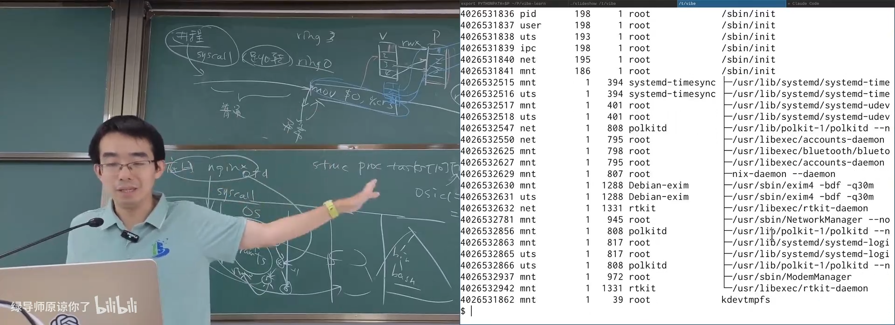
📷 procfs 暴露每个进程所属的命名空间引用
回到原视频 (01:06:30)
7.4 命名空间可以组合
(参考时间: 01:08)
两个进程可以：
- 共享
net； - 使用不同
mnt； - 使用不同
ipc； - 使用不同
user。
不必所有命名空间都一起隔离。
flowchart LR
P1["Process 1"] --> N1["Shared Net NS"]
P2["Process 2"] --> N1
P1 --> M1["Mount NS A"]
P2 --> M2["Mount NS B"]
P1 --> U1["User NS A"]
P2 --> U2["User NS B"]
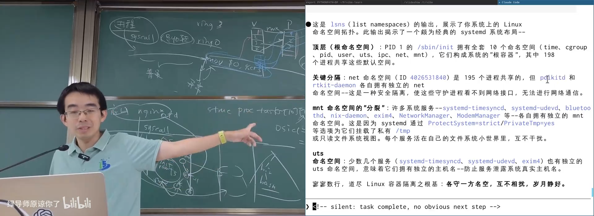
📷 不同进程可以共享部分命名空间并隔离其他部分
回到原视频 (01:08:30)
8. cgroups：资源控制
8.1 命名空间不等于资源限制
(参考时间: 01:09)
命名空间解决“看不看得见”，但不解决“能用多少资源”：
- CPU 时间；
- 内存；
- 文件系统带宽；
- 网络带宽；
- 进程数量；
- 文件描述符。
flowchart LR
A["Namespaces"] --> B["Visibility Isolation"]
C["cgroups"] --> D["Resource Control"]
B --> E["Container Isolation"]
D --> E
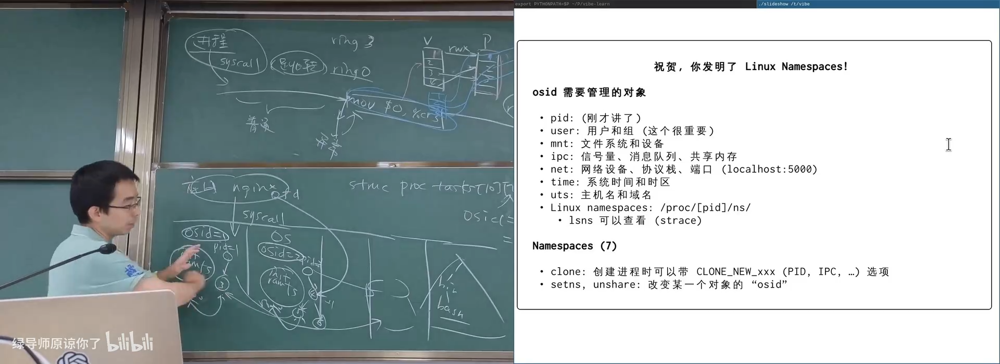
📷 命名空间负责可见性，cgroup 负责资源配额
回到原视频 (01:09:30)
8.2 CPU 计费
(参考时间: 01:10)
cgroup 可以把一组进程看作一个调度实体：
cgroup A: CPU time count
cgroup B: CPU time count
cgroup C: CPU time count
策略可以规定：
- 最多使用 20% CPU；
- 多个 cgroup 公平分享；
- cgroup 之间分层调度；
- 设置 memory/IO 上限。
flowchart TD
ROOT["Root cgroup"] --> A["Group A"]
ROOT --> B["Group B"]
A --> A1["Process 1"]
A --> A2["Process 2"]
B --> B1["Process 3"]
B --> B2["Process 4"]
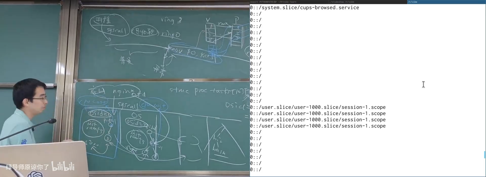
📷 cgroup 把进程组织成可设置资源策略的层级
回到原视频 (01:11:00)
8.3 cgroup v2 的树结构
(参考时间: 01:11)
/sys/fs/cgroup/
system.slice/
user.slice/
docker/
container-a/
container-b/
每个层级可以采用不同分配策略。
flowchart TD
R["Root"] --> S["System Slice"]
R --> U["User Slice"]
S --> D["Docker"]
D --> A["Container A"]
D --> B["Container B"]
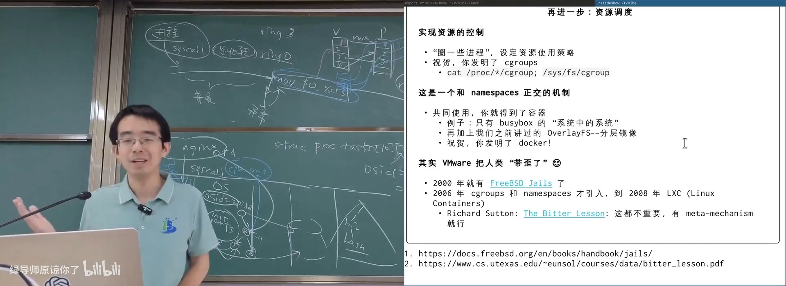
📷 cgroup v2 允许在树的不同层级设置资源策略
回到原视频 (01:11:30)
9. 容器：Namespaces + cgroups + OverlayFS
9.1 组合出 Docker
(参考时间: 01:12)
容器需要：
- namespaces：隔离对象视图；
- cgroups：控制资源；
- OverlayFS：共享只读镜像层，写时复制；
- chroot/pivot_root：构造独立的根文件系统。
flowchart LR
A["Namespaces"] --> D["Container"]
B["cgroups"] --> D
C["OverlayFS / Image Layers"] --> D
E["chroot / pivot_root"] --> D
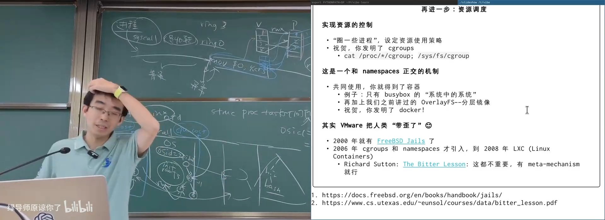
📷 容器由命名空间、资源控制、分层镜像和独立根目录组合而成
回到原视频 (01:12:30)
9.2 容器与虚拟机
(参考时间: 01:13)
| 维度 | 虚拟机 | 容器 |
|---|---|---|
| 隔离层 | 虚拟硬件 + Guest Kernel | 共享 Host Kernel |
| 启动开销 | 高 | 低 |
| 内存开销 | 高 | 通常更低 |
| 隔离强度 | 更强 | 依赖内核隔离 |
| 密度 | 较低 | 较高 |
容器更轻量，但 Host Kernel 漏洞会影响隔离：
- 越权读取其他容器；
- 耗尽全局 fd 等资源；
- 对其他容器形成 DoS。
flowchart TD
A["Host Kernel"] --> B["Container A"]
A --> C["Container B"]
D["Kernel Vulnerability"] --> E["Cross-Container Impact"]
F["VM Hypervisor"] --> G["Guest Kernel A"]
F --> H["Guest Kernel B"]
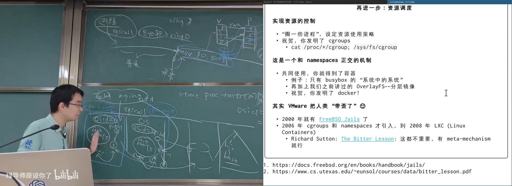
📷 容器共享内核，隔离性和攻击面不同于虚拟机
回到原视频 (01:13:30)
9.3 FreeBSD Jails、LXC 与 Docker
(参考时间: 01:14)
时间线：
1979 chroot
2000 FreeBSD Jails
2006 Linux namespaces + cgroups
2008 LXC
2013+ Docker / OCI / Kubernetes
flowchart LR
A["chroot 1979"] --> B["FreeBSD Jails 2000"]
B --> C["Namespaces + cgroups 2006"]
C --> D["LXC 2008"]
D --> E["Docker"]
E --> F["Cloud Native"]
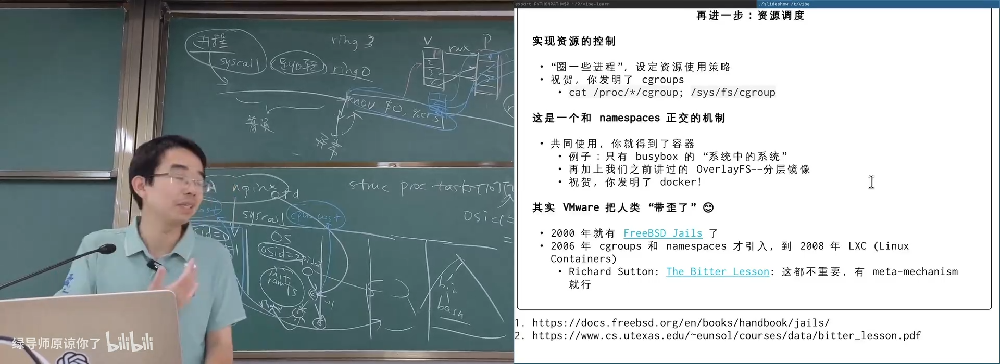
📷 操作系统级虚拟化早于容器热潮，并持续演化
回到原视频 (01:14:30)
9.4 The Bitter Lesson 与 meta-mechanism
(参考时间: 01:15)
课程再次引用 The Bitter Lesson：
- 不要只堆积人类手工知识；
- 寻找能随算力和规模增长的 meta-mechanism；
- Docker 与云原生是技术演进中的一种 meta-mechanism。
flowchart TD
A["Hand-Crafted Mechanism"] --> B["Limited Scaling"]
C["Meta-Mechanism"] --> D["Learns / Scales with Resources"]
D --> E["Long-Term Advantage"]
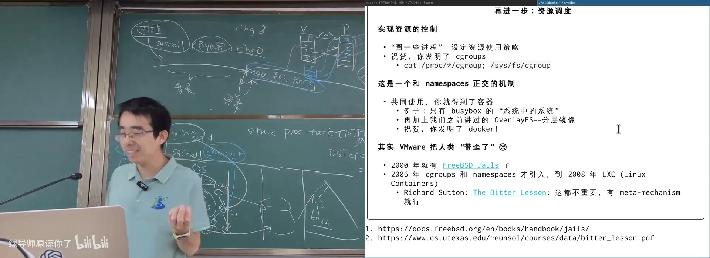
📷 可扩展的元机制往往比手工设计赢得长期竞争
回到原视频 (01:15:30)
10. Kubernetes：容器编排
10.1 声明式管理无状态 Pod
(参考时间: 01:18)
Kubernetes 的目标：
- 动态调度容器；
- 自动伸缩；
- 节点故障时重新部署；
- 健康检查；
- 负载均衡；
- 统一访问和服务发现。
flowchart TD
D["Desired State"] --> K["Kubernetes Control Plane"]
K --> N1["Node 1"]
K --> N2["Node 2"]
K --> N3["Node 3"]
N1 --> P1["Pod A"]
N2 --> P2["Pod A'"]
N3 --> P3["Pod B"]
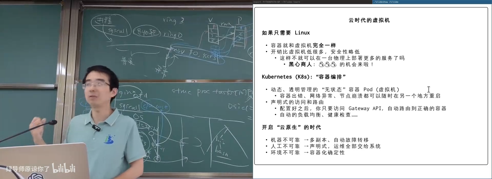
📷 Kubernetes 持续把实际容器状态收敛到声明状态
回到原视频 (01:18:00)
10.2 Gateway 与服务路由
(参考时间: 01:19)
客户端只需请求服务名：
request -> Gateway API -> Correct Pod
系统负责：
- 服务发现；
- 路由；
- 健康检查；
- 故障转移；
- 负载均衡。
flowchart LR
C["Client"] --> G["Gateway API"]
G --> S["Service Name"]
S --> P1["Pod 1"]
S --> P2["Pod 2"]
S --> P3["Pod 3"]
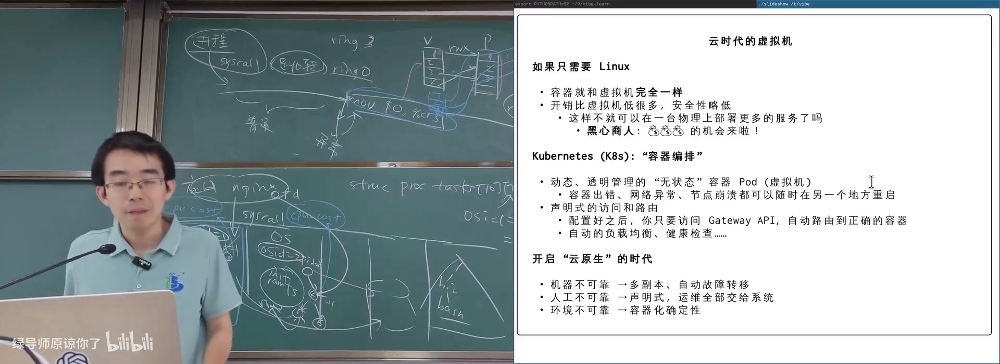
📷 Gateway 把服务名解析到健康容器自动路由
回到原视频 (01:19:30)
10.3 容器调度是背包问题
(参考时间: 01:20)
每个容器有多维资源需求：
(CPU, Memory, GPU, IO, ...)
调度器希望用尽可能少的机器放下所有容器：
- 多维 Bin Packing；
- NP-hard；
- 集群动态变化；
- 容器频繁创建、销毁和迁移；
- 用户随时扩缩容。
flowchart TD
C1["Container: CPU / RAM"] --> B["Bin Packing"]
C2["Container: CPU / RAM"] --> B
C3["Container: CPU / RAM"] --> B
B --> N1["Node 1"]
B --> N2["Node 2"]
B --> N3["Node 3"]
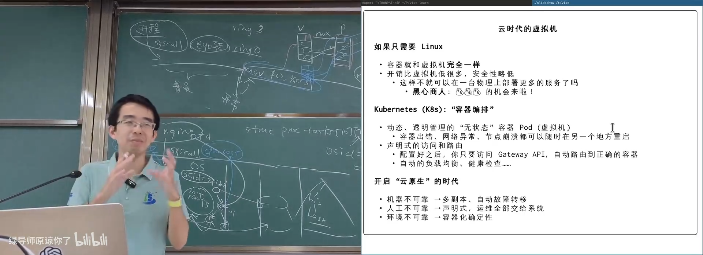
📷 容器调度本质上是动态多维装箱问题
回到原视频 (01:20:30)
10.4 静态论文假设与现实系统
(参考时间: 01:22)
如果把容器调度写成静态整数线性规划，容易假设：
- 某一瞬间知道全部容器；
- 资源需求不变；
- 节点稳定；
- 不存在自动扩缩容；
- 看不到厂商的隐藏压缩与超卖。
真实集群中这些假设往往不成立，因此研究工作必须理解实际系统。
flowchart TD
A["Static Optimization Paper"] --> B["Fixed Container Set"]
B --> C["Fixed Node Capacity"]
C --> D["Offline ILP"]
E["Real Cluster"] --> F["Dynamic Containers"]
F --> G["Elastic Scaling"]
G --> H["Failures / Migration / Oversubscription"]
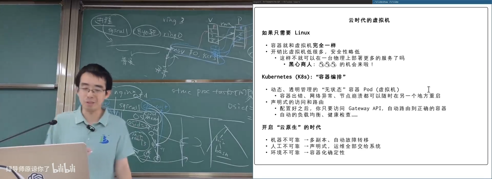
📷 静态优化假设经常无法覆盖真实集群的动态行为
回到原视频 (01:22:30)
11. 总结：三条虚拟化路线
11.1 完整模拟
- 指令级解释；
- basic block JIT；
- 模板拼接与 relocation；
- 跨架构、灵活但开销大。
11.2 虚拟机监控器
- Guest 用户代码直接执行；
- 特权操作陷入；
- 影子页表；
- 硬件虚拟化、EPT、VIRTIO；
- 强隔离，适合异构操作系统。
11.3 操作系统级虚拟化
- OSID / namespaces；
- cgroups；
- chroot / OverlayFS；
- Docker、LXC、Kubernetes；
- 轻量、密集、适合云原生服务。
flowchart LR
A["Full Emulation"] --> D["Isolation"]
B["VMM"] --> D
C["OS-Level Virtualization"] --> D
D --> E["Cloud / Containers"]
E --> F["Scale Out"]
最终结论：
虚拟化不仅是“把一台机器变成多台”，更是不断重新定义边界：哪些状态要模拟，哪些代码可以直接执行，哪些资源可以共享，哪些对象必须隔离。
附：官方参考与延伸阅读
- PA4 x86 JIT 视频
- QEMU: A Fast and Portable Dynamic Translator
- Disco: Running Commodity Operating Systems on Scalable Multiprocessors
- Y Combinator
- Benchmark Crimes
- Live updating operating systems using virtualization
- Xen and the Art of Virtualization
- VIRTIO 1.1
- ReVirt
- Optimizing the Migration of Virtual Computers
- FreeBSD Jails
- The Bitter Lesson
官方课程资料：
版权与署名：本讲课程材料由蒋炎岩（jyy）编写。课程讲义与幻灯片采用 Creative Commons BY-NC 4.0 许可；本电子书保留课程出处、作者署名与许可说明。